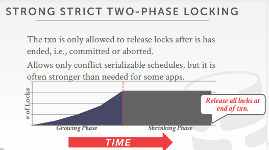

Background
上一章的分析都是基于事务已经发生了，然后再去判断分析是否可行
但实际上是不可能这么顺利的，因为我们不知道整个事务是怎么运行的
所以很自然的想到用锁实现多个事务的并发，从而实现对数据的保护
Lock types

Latches
是微观的概念
使用在底层的数据结构（比如说B树、红黑树、B+树、hash表等）
Lock
是宏观的概念
对数据库的抽象的内容的锁
对于用户来说，是获取一条数据的lock，而真正去操作这条数据的时候，比如说操作B+树，才会去操作latches
所以说lock锁的是具体的数据表或者数据行
lock的类型：
- S-LOCK：shared lock，共享锁，读锁
- X-LOCK：exclusive lock，排他锁，写锁

DBMS使用lock的过程：
- 事务需要锁
- 锁管理器要么给锁（锁是空闲的），要么阻塞（锁给其他事务了）
- 事务释放锁
- 锁管理器更新锁的使用情况
Two-phase locking
2PL
把锁用在并发控制中，决定了一个事务在运行过程中如何和其他的事务进行协调
不需要知道提前知道事务做了什么
PS：2PL是针对单个事务的整体拿锁释放锁来说的
用二阶段锁的事务执行顺序，用依赖图表示是没有环的


阶段一：growing
- 事务只能不断的加锁，不能解锁
- lock manager在这个阶段要么给锁，要么阻塞（此时lock被其他事务获取了）
阶段二：shrinking
- 事务在这个阶段只能解锁，不能加锁
2PL会出现级联终止的问题（即脏读）

- T1先做一部分，T2基于T1的数据再做一部分，结果T1要回滚了，导致T2读取了未提交事务的数据
- 问题就在于T2是基于T1还未提交的一个版本进行的
Strong Strict 2PL
针对级联终止的问题，使用严格二阶段锁（SS2PL）可以解决
原来的二阶段锁，在shrinking的时候，是可以边操作边解锁的
而严格二阶段锁，是指一定程度后锁的数量会保持不变，到了最后事务commit的时候才会释放所有的锁
即事务修改的数据，一直到事务提交之前，别人都不能修改
优点：不会出现级联回滚；事务中间可能对数据又多次操作，但是不用管，直接回滚到事务之前的版本即可；被abort的txn可以通过恢复到原始数据来消除影响

2PL基本上都会遇到死锁的情况
解决办法：deadlock detection and prevention
Deadlocking detection + prevention
无论是2PL，还是SS2PL，都可能会产生死锁饥饿的情况

解决办法：
- deadlock detection（死锁检测）
- deadlock prevention（死锁预防）
Deadlock detection
死锁检测：DBMS在内部会维护一个锁依赖图，记录了当前并发的事务谁在等待谁的锁，图的每个结点都是一个事务
比如说，事务A指向事务B，表示事务A在等待事务B的锁

DBMS会周期性的检测锁依赖图，检查是否出现成环的情况
如果发现了环，就会选择其中某个事务进行回滚，以此来解开环，使得事务继续进行下去
这里会有一个权衡：DBMS检查锁依赖图的频率
一个考虑因素就是：应该选择哪一个事务进行回滚？
- 如果是执行了时间特别的长或者快要执行完了的事务，就尽量不要回滚它
- 看事务执行了多少条sql语句，即查看要回滚的代价，尽量回滚sql语句做得少的事务
- 查看事务拿了多少锁，尽量回滚加锁比较多的事务
- 考虑多少其他的事务都因为它而回滚过（即检测该事务被回滚了多少次）
当然还有另一个考虑因素：事务的回滚程度
- 完全回滚 completely rollback
- 部分回滚 minimallly rollback
Deadlock prevention
死锁预防：当T1想要的lock被T2拿到的时候，那么DBMS就会挑选其中一个kill
根据时间戳给事务优先级，越早开始的事务有高优先级（older time stamp = higher priority）

Old waits young
如果是老的事务（高优先级）想要加锁，发现锁被一个年轻的事务（低优先级）拿到了，那么老的事务就要等年轻的事务释放了才能拿
反之，年轻的事务想要加的锁在老的事务持有，那么年轻的事务就要abort
Young waits old
如果一个老的事务想要拿的锁被一个年轻的事务持有，那么老的事务就把年轻的事务的锁抢过来，并把年轻的事务abort
反之，年轻的事务想要加的锁在老的事务持有，那么年轻的事务要等待老的事务
简而言之就是给事务优先级，然后针对优先级指定不同的策略
（这也是为什么可以解决死锁的原因，有点像swap时，要先拿低地址数据的lock，再拿高地址数据的lock一样，就要保持所有的拿锁都有一个规律的顺序）
被abort的事务的时间戳是多少：应该还是原来的时间戳
- 为了防止饥饿，因为此时年轻的时间戳，早晚会变成老的时间戳
MySQL的死锁检测是第一种（Old waits young）
Lock granularitiles
锁的粒度
如果两条需要更新的事务都需要把整张表给锁住，那么并发度就会因此下降
因此DBMS需要尽可能的控制好锁的粒度和数量
根据业务需求，看看是需要更少的锁的数量，还是要需要更大粒度的锁
大粒度的锁：给整个表加锁，要先检查每个行是否要加锁
- solve：给一个标记，加行锁的时候标记一下，表示当前加不了表锁了
Intention locks
意向锁，可以认为是一个意向标记
当有事务给表的数据行加了共享锁或排他锁，同时会给表设置一个标识，代表已经有行锁了
其他事务要想对表加表锁时，就不必逐行判断有没有行锁可能跟表锁冲突了
直接读这个标识就可以确定自己该不该加表锁
意向锁允许更高级别的节点锁定在共享（S锁）或独占（X锁）模式，无需检查所有的节点
如果一个表被加了意向锁，就代表表中的部分数据被加上了S锁或X锁
意向锁的类型：
- intention shared（IS）意向共享锁
- 下面的行有被加S锁
- 意味着对整个表加S锁前，需要先获取到IS锁
- intention exclusive（IX）意向排他锁
- 下面的行有被加X锁
- 意味着对整个表加X锁前，需要先获取到IX锁
- shared + intention - exclusive （SIX）
- 部分行被加了排他锁（X lock），整个表又被加了共享锁（IS）

Locking protocol
To get S or IS lock on a node, the txn must hold at least IS on parent node
- 想要对数据加S锁或IS锁，就必须要持有数据的IS锁
To get X, IX, or SIX on a node, must hold at least IX on parent node
- 想要对数据加X锁，IX，SIX，就必须要持有数据的IX锁
Lock escalation
当低级别的锁过多的时候，锁会自动升级为表锁，从而能够减少锁的请求和持有数量
Lock table
绝大部分锁，都是DBMS自己加的，当然有时候可以显式的给node加锁
而DBMS也提供了接口，让用户可以在语法上加锁
LOCK TABLE <table> IN <mode> MODE; select * from <table> where <> for update; // 数据库备份的时候用到的显式告诉数据读的数据要加的不是共享锁，而是排他锁
Select…for update
用sql语句显式的给数据加上X lock
select * from <table> where <qualification> for update;Conclusion
几乎所有的关系数据库都用了2PL，例如MySQL,Postgresql（Postgresql有些还有个ssi）
通过2PL可以放心的让事务进行并发
我对2PL的一些思考：
无论是2PL还是SS2PL，其实都存在不符合可串行化的情况
比如说T1，T2两个事务T1先执行，T2后执行，那么准确的语义应该是T2读到数据，都应该是T1执行后的数据
而如果T2的操作全部是读取数据，而T1的操作是一开始读取数据，最后的时候才修改数据
那么T1和T2并发的过程中，T2能够读取的数据有可能就是T1一开始读取的数据，即T1还没有修改过的数据
这是不符合我们事务上的逻辑顺序的（T2晚于T1），我们的要求是T2读到的数据必须是T1执行完后的
因此商用数据库并不只使用2PL这一种并发控制协议，而是多种（MVCC，TOO）并发协议一起搭配着使用